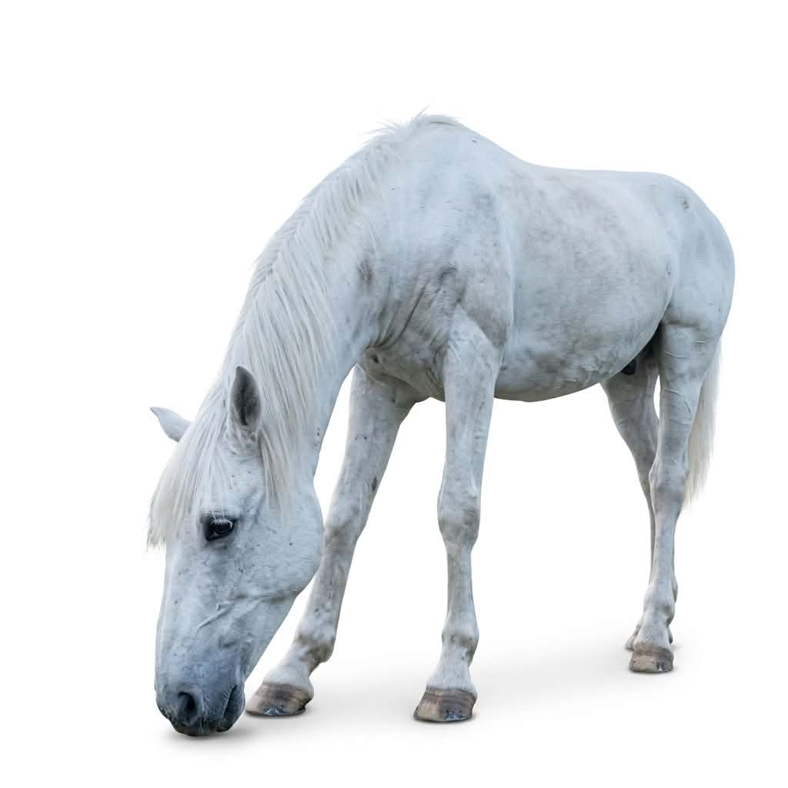

ცხოველების გაცნობა
სხვადასხვა ცხოველის ნახვა და გამოკვება უსაფრთხო და მეგობრულ გარემოში.
კონტაქტური ფერმა თბილისში, სოფელ დიღომში
ლუკას ფერმა არის მყუდრო ადგილი, სადაც თქვენ და თქვენს პატარებს შეგიძლიათ ნახოთ სხვადასხვა ცხოველი და ფრინველი, გაიგოთ მეტი მათ შესახებ და მონაწილეობა მიიღოთ სხვადასხვა შემეცნებით აქტივობაში. ლუკა და მისი ოჯახი გიმასპინძლებენ როგორც ინდივიდუალურად, ასევე ჯგუფური ექსკურსიებისთვის.



აქტივობები
ფერმაში სტუმრებს შეუძლიათ ცხოველების ნახვა, გაცნობა და ბუნებაში მშვიდი დროის გატარება.
სხვადასხვა ცხოველის ნახვა და გამოკვება უსაფრთხო და მეგობრულ გარემოში.
ფერმის ფრინველების კვერცხების პოვნა და შეგროვება.
იმერული ყველის დამზადების მასტერკლასი.
ბოსტანში მუშაობა და მცენარეების დათესვა როგორც ქოთანში, ასევე ბაღში.
მონახულება
პირობების შესათანხმებლად, გთხოვთ, დაგვიკავშირდეთ წინასწარ. შესაძლოა დაიგეგმოს როგორც ჯგუფური, ასევე ინდივიდუალური ვიზიტი.
კონტაქტი
შეგიძლიათ დაგვიკავშირდეთ შემდეგი საშუალებებით: